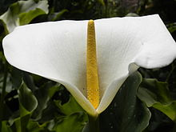

garden
A garden is a planned space, usually outdoors, set aside for the cultivation, display, and enjoyment of plants and other forms of nature. The single feature identifying even the wildest wild garden is control. The garden can incorporate both natural and artificial materials.Gardens often have design features including statuary, follies, pergolas, trellises, stumperies, dry creek beds, and water features such as fountains, ponds (with or without fish), waterfalls or creeks. Some gardens are for ornamental purposes only, while others also produce food crops, sometimes in separate areas, or sometimes intermixed with the ornamental plants. Food-producing gardens are distinguished from farms by their smaller scale, more labor-intensive methods, and their purpose (enjoyment of a hobby or self-sustenance rather than producing for sale, as in a market garden). Flower gardens combine plants of different heights, colors, textures, and fragrances to create interest and delight the senses.

flower
Although this arrangement is considered "typical", plant species show a wide variation in floral structure.[13] The four main parts of a flower are generally defined by their positions on the receptacle and not by their function. Many flowers lack some parts or parts may be modified into other functions or look like what is typically another part. In some families, like Ranunculaceae, the petals are greatly reduced and in many species the sepals are colorful and petal-like. Other flowers have modified stamens that are petal-like; the double flowers of Peonies and Roses are mostly petaloid stamens.[15]Many flowers have a symmetry. When the perianth is bisected through the central axis from any point and symmetrical halves are produced, the flower is said to be actinomorphic or regular. This is an example of radial symmetry. When flowers are bisected and produce only one line that produces symmetrical halves, the flower is said to be irregular or zygomorphic. If, in rare cases, they have no symmetry at all they are called asymmetric.Flowers may be directly attached to the plant at their base (sessile—the supporting stalk or stem is highly reduced or absent).[18] The stem or stalk subtending a flower, or an inflorescence of flowers, is called a peduncle. If a peduncle supports more than one flower, the stems connecting each flower to the main axis are called pedicels. The apex of a flowering stem forms a terminal swelling which is called the torus or receptacle.In the majority of species individual flowers have both pistils and stamens. These flowers are described by botanists as being perfect, bisexual, or hermaphrodite. However, in some species of plants the flowers are imperfect or unisexual: having only either male (stamens) or female (pistil) parts. In the latter case, if an individual plant is either female or male the species is regarded as dioecious. However, where unisexual male and female flowers appear on the same plant, the species is called monoecious.
